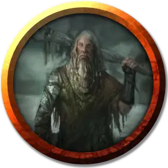

Священник бурных вод
Rip Tide Priest
Средний Гуманоид (Человек), нейтрально-злой

Класс Доспеха 13 (кольчужная рубаха)
Хиты 52 (8к8 + 16)
Скорость 30 футов
| мод | спас | ||
|---|---|---|---|
| СИЛ | 15 | +2 | +2 |
| ЛОВ | 11 | +0 | +0 |
| ТЕЛ | 14 | +2 | +2 |
| мод | спас | ||
|---|---|---|---|
| ИНТ | 10 | +0 | +0 |
| МДР | 11 | +0 | +0 |
| ХАР | 16 | +3 | +3 |
Навыки Обман +5, Религия +2, Скрытность +2
Чувства пассивное Восприятие 10
Языки Общий, Акван
Опасность 2 (450 опыта)
Бонус мастерства +2
Особенности
Использование заклинаний. Священник является заклинателем 5-го уровня. Его базовой характеристикой является Харизма (Сл спасброска от заклинаний 13, +5 к атакам заклинаниями). У него подготовлены следующие заклинания чародея:
• Заговоры (Неограниченно): леденящее прикосновение [chill touch], волшебная рука [mage hand], малая иллюзия [minor illusion], фокусы [prestidigitation], луч холода [ray of frost];
• 1 уровень (4 ячейки): поспешное отступление [expeditious retreat], волшебная стрела [magic missile], щит [shield];
• 2 уровень (3 ячейки): размытый образ [blur], удержание личности [hold person];
• 3 уровень (2 ячейки): метель [sleet storm].
Действия
Боевой посох. Рукопашная атака оружием: +4 к попаданию,досягаемость 5 футов, одна цель. Попадание: 6 (1к8 + 2) дробящего урона.
Описание
Священники культа Бурных вод собираются в тайные общины, чтобы совершать темные ритуалы, прославляющие Ольгидру, стихийной Принцессы Злой Воды, как воплощение разрушительности воды. Они верят, что использование воды для убийства своих врагов, например, путем ритуального утопления, приносит им благосклонность Ольгидры.